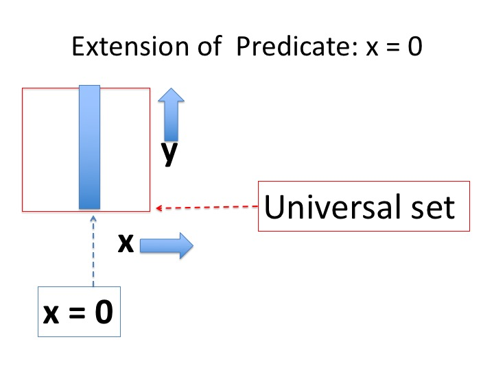
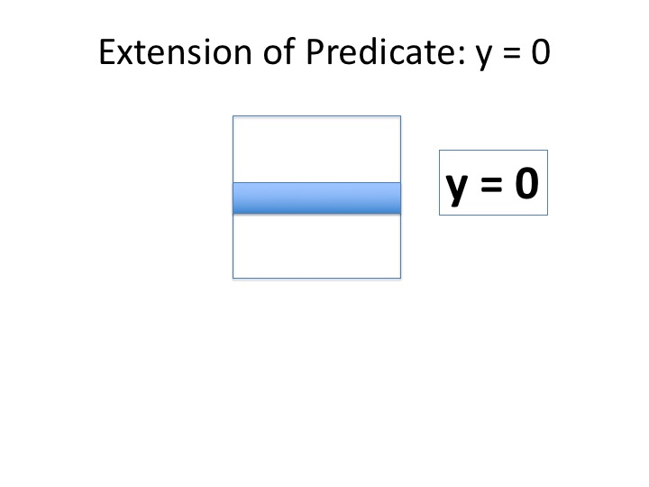
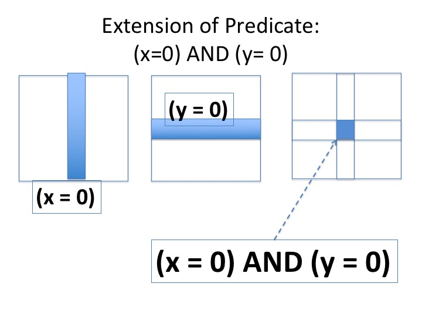
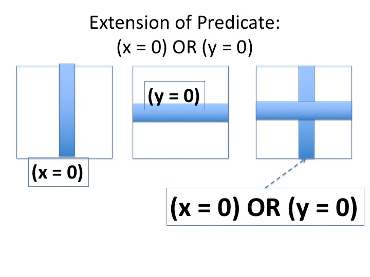
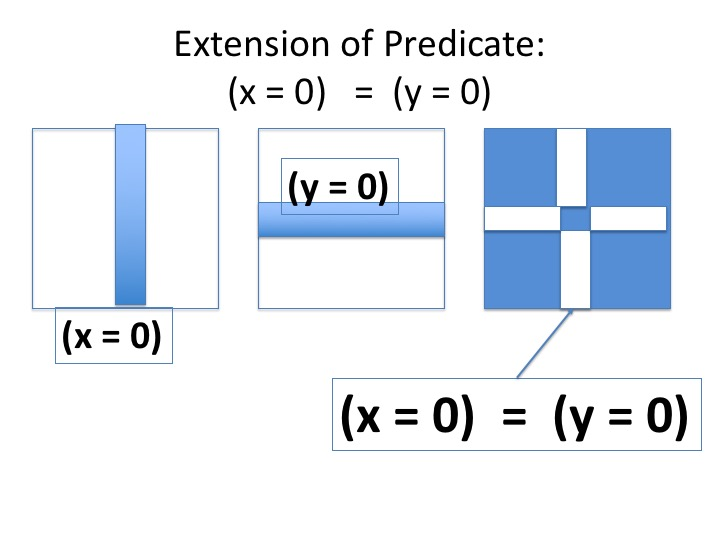
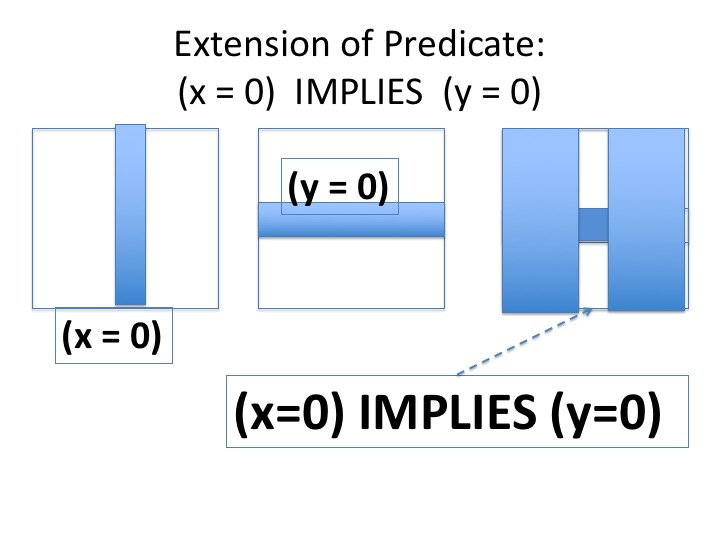

Consider a program with integer variables \(x, y\).
The state of the program is given by the value of the tuple \(x, y\).
The universal set is the set of all possible values of \(x,
y\).
Each state is represented by a point \(x, y\) in the plane.
The universal set is shown as the red box that bounds the values that
integers take in the program.
The set of states for which a predicate holds is called the extension
of the predicate. The
extension of the predicate \(x = 0\) is shown by the vertical blue
line, \(x = 0\).
>
Fig.1 - Set which is extension of \(x = 0\)
The set of states which is the
extension of the predicate \(y = 0\) is shown by the horizontal blue
\(y = 0\).
>
Fig.2 - Set which is extension of \(y = 0\)
The set of states which is the
extension of the predicate \((x = 0) \wedge(y = 0)\) is shown by the blue
square in the right most diagram: the box is at the intersection of
\((x = 0)\) and \((y = 0)\).
>
Fig.3 - Set which is extension of \((x = 0) \wedge(y = 0)\)
The set of states which is the
extension of the predicate \((x = 0) \vee (y = 0)\) is shown by the blue
horizontal and vertical lines in the rightmost diagram; this set is
the union of the sets
corresponding to
\((x = 0)\) and \((y = 0)\).
>
Fig.4 - Set which is extension of \((x = 0) \vee(y = 0)\)
The set of states which is the
extension of the predicate \((x = 0) \equiv (y = 0)\) is shown in the blue
spaces in the rightmost diagram. A state satisfies this predicate exactly
when:
>
Fig.5 - Set which is extension of \((x = 0) \equiv (y = 0)\)
The set of states which is the
extension of the predicate \((x = 0) \Rightarrow (y = 0)\) is shown in the blue
spaces in the figure below. A state satisfies this predicate exactly
when:
\(
(x \neq 0) \vee (y = 0))
\)
>
Fig.6 - Set which is extension of \((x \geq 0) \equiv
\neg(x < 0)\)